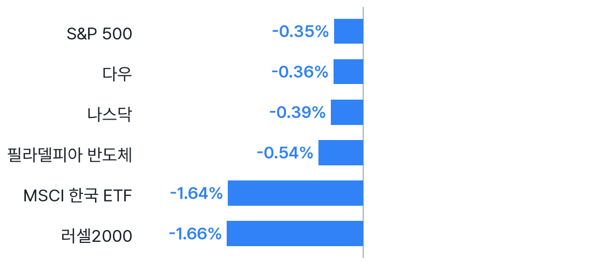
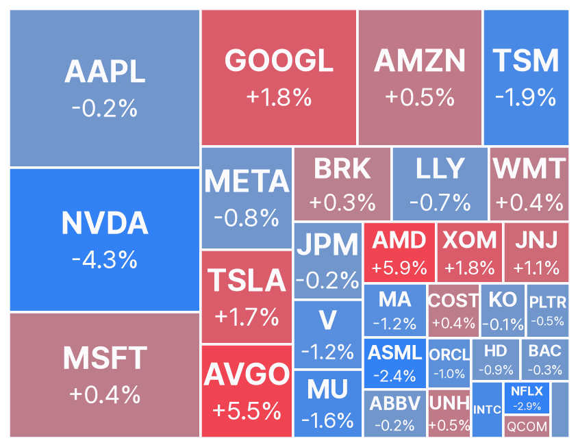
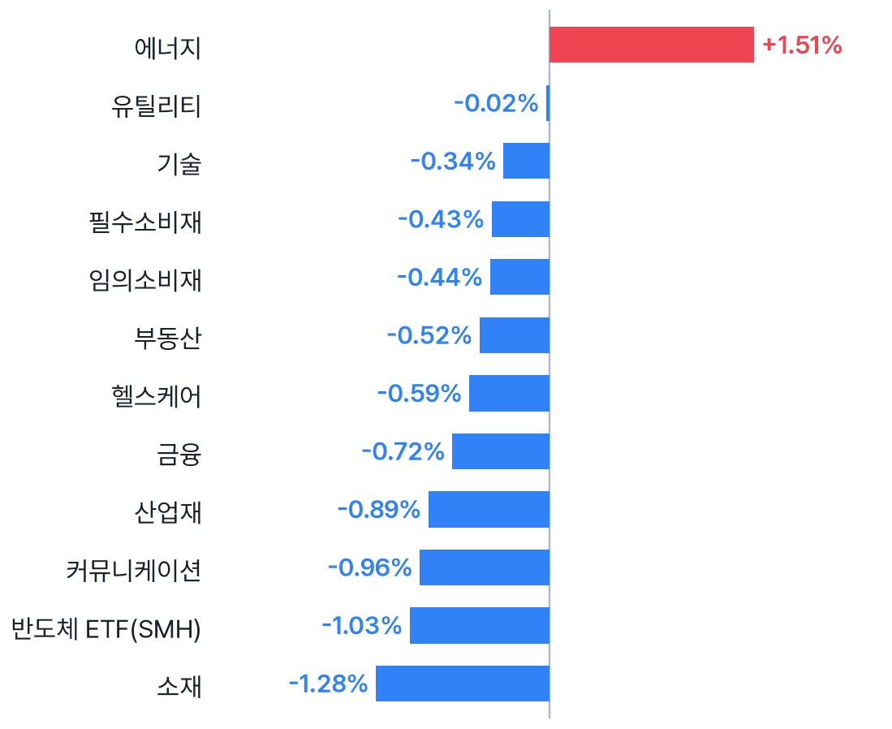
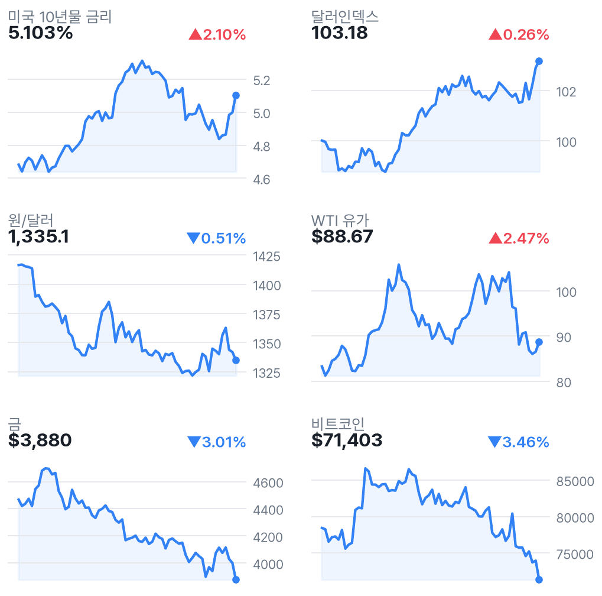
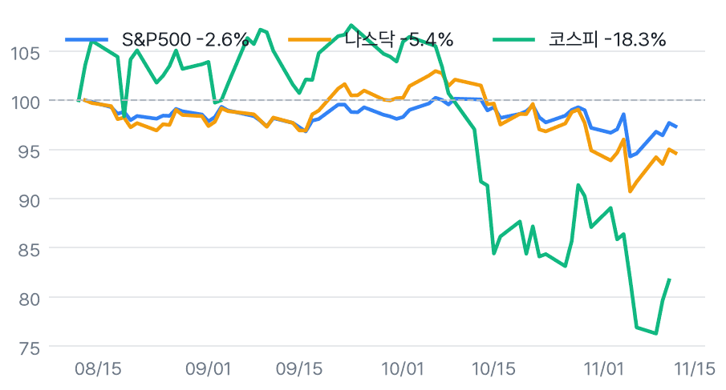

나스닥 0.39%↓, 황 퇴진·유가 상승에 약세
✅ 핵심 요약
- 젠슨 황 퇴진에 NVDA -4.34%; AMD +5.86%·브로드컴 +5.54%로 반도체 차별화.
- 미 10년물 5.103%·WTI +2.47%, VIX 18.70으로 금리·물가 경계 확대.
- EWY -1.64%는 국내장 부담; 원/달러 1,335.1원(-0.51%)은 상반된 신호.
- 오늘 22:30 미국 PPI 발표: 전월비 예상 0.4%, 근원 예상 0.3%.
📊 주요 지표
S&P 500
7,592.40
▼0.35%
나스닥
25,366.09
▼0.39%
다우
52,297.09
▼0.36%
필라델피아 반도체
10,506.67
▼0.54%
VIX
18.70
▲6.92%
미국 10년물
5.103%
▲2.10%
원/달러
1,335.1
▼0.51%
달러인덱스
103.18
▲0.26%
WTI
$88.67
▲2.47%
금
$3,880
▼3.01%
비트코인
$71,403
▼3.46%
EWY(한국 ETF)
$145.38
▼1.64%
🧭 시장 해석
미국장은 젠슨 황 퇴진에 따른 엔비디아 경영 불확실성과 유가 상승 속에 하락했다. 나스닥은 0.39% 내렸지만 AMD·브로드컴은 상승해 반도체 전반의 수요 붕괴보다는 종목별 차별화가 두드러졌다.
국내장은 EWY -1.64%·반도체지수 -0.54%가 부담이다. 원/달러 하락은 상반된 신호로, 이를 외국인 매수 확대로 단정할 수 없다. 미 10년물 5.103%와 오늘 밤 생산자물가가 금리 경계의 완화 여부를 가를 변수다.
엔비디아 경영 충격과 AI 투자 수요는 구분
NVDA는 4.34% 내렸고 증권사 의견·목표가 하향이 이어졌다. 반면 AMD +5.86%, 브로드컴 +5.54%로 경쟁사는 강세였다. 시스코의 AI 인프라 매출 확대 전망과 세레브라스의 실적·계약 보도도 나왔다. 국내 반도체는 업종 일괄 평가보다 고객사 노출도와 실제 발주 변화를 따로 확인할 필요가 있다.
금리·유가 동반 상승, 오늘 밤 PPI 주목
WTI는 88.67달러(+2.47%), 에너지 ETF는 +1.51%로 강세였다. 미 10년물 금리는 5.103%이고 러셀2000은 1.66% 하락해 금리 민감 자산의 부담이 드러났다. 오늘 밤 PPI 전월비 예상은 0.4%, 근원은 0.3%다. 이는 전망치이며 실제 발표값은 아직 아니다.
📈 차트
미국 주요 지수 등락률

2026-11-12 미국 정규장 종가 기준 · EWY는 코스피 선행 지표로 참고
미국 빅테크·대형주 히트맵

타일 크기 = 시가총액, 색 = 등락률 (빨강 상승 · 파랑 하락)
미국 섹터 ETF 등락률

SPDR 섹터 ETF + 반도체(SMH)
금리·환율·원자재 (3개월)

우측 상단 = 전일 대비
3개월 추세 비교 (시작=100)

미국 vs 한국 지수 흐름
🏦 애널리스트 · 리서치
- NVDA — Melius, Buy→Hold·목표가 $315→$185매수 의견과 목표가를 함께 낮춘 의견. 경영 불확실성 속 평가 하향 흐름이다.
- NVDA — Bernstein, Outperform→Market Perform목표가도 $400→$200로 낮췄다는 의견. 회사 실적 전망과는 구분해야 한다.
- AMD — William Blair, Market Perform→Outperform엔비디아와 달리 투자의견을 상향했다는 의견으로 종목별 차별화를 보여준다.
- AMD — BofA, Buy 유지·목표가 $650→$700매수 의견을 유지하며 목표가를 높였다는 의견이다.
- INTC — BofA, Neutral 유지·목표가 $100→$80반도체 내에서도 목표가 하향이 병존한다는 의견이다.
미국 대형주 의견·목표가 변경 21건 (Yahoo)
- 의견 상향AMD · William BlairMarket Perform → Outperform · 11/12 21:24 KST
- 의견 하향NVDA · Melius ResearchBuy → Hold · 목표가 $315 → $185 · 11/13 03:17 KST
- 의견 하향NVDA · Craig-HallumBuy → Hold · 목표가 $180 · 11/13 02:52 KST
- 의견 하향NVDA · StoneXBuy → Hold · 11/13 00:32 KST
- 의견 하향NVDA · William BlairOutperform → Market Perform · 11/12 21:41 KST
- 의견 하향NVDA · KeybancOverweight → Sector Weight · 11/12 21:37 KST
- 의견 하향NVDA · BernsteinOutperform → Market Perform · 목표가 $400 → $200 · 11/12 21:05 KST
- 의견 하향NVDA · Evercore ISI GroupOutperform → In-Line · 목표가 $465 → $186 · 11/12 20:15 KST
- 의견 하향NVDA · OppenheimerOutperform → Perform · 11/12 18:41 KST
- 목표가 상향AMD · B of A SecuritiesBuy · 목표가 $650 → $700 · 11/13 02:41 KST
- 목표가 하향INTC · B of A SecuritiesNeutral · 목표가 $100 → $80 · 11/13 02:26 KST
- 목표가 하향NVDA · DA DavidsonBuy · 목표가 $300 → $200 · 11/13 03:13 KST
- 목표가 하향NVDA · B of A SecuritiesBuy · 목표가 $350 → $280 · 11/13 02:46 KST
- 목표가 하향NVDA · BMO CapitalOutperform · 목표가 $340 → $240 · 11/13 01:53 KST
- 목표가 하향NVDA · Goldman SachsBuy · 목표가 $300 → $220 · 11/13 01:47 KST
- 목표가 하향NVDA · CitigroupBuy · 목표가 $285 → $225 · 11/13 00:56 KST
- 목표가 하향NVDA · NeedhamBuy · 목표가 $300 → $200 · 11/13 00:36 KST
- 목표가 하향NVDA · StifelBuy · 목표가 $315 → $205 · 11/12 23:13 KST
- 목표가 하향NVDA · RBC CapitalOutperform · 목표가 $330 → $230 · 11/12 22:20 KST
- 목표가 하향NVDA · Cantor FitzgeraldOverweight · 목표가 $350 → $250 · 11/12 21:02 KST
- 목표가 하향XOM · BernsteinOutperform · 목표가 $193 → $186 · 11/12 21:41 KST
국내 종목분석 리포트 30건 (네이버 리서치)
-
DS투자증권 · 2026-11-12
-
교보증권 · 2026-11-12
-
교보증권 · 2026-11-12
-
교보증권 · 2026-11-12
-
교보증권 · 2026-11-12
-
교보증권 · 2026-11-12
-
IBK투자증권 · 2026-11-12
-
하나증권 · 2026-11-12
-
하나증권 · 2026-11-12
-
하나증권 · 2026-11-12
-
하나증권 · 2026-11-12
-
하나증권 · 2026-11-12
-
하나증권 · 2026-11-12
-
하나증권 · 2026-11-12
-
하나증권 · 2026-11-12
-
하나증권 · 2026-11-12
-
하나증권 · 2026-11-12
-
한화투자증권 · 2026-11-12
-
한화투자증권 · 2026-11-12
-
한화투자증권 · 2026-11-12
-
한화투자증권 · 2026-11-12
-
한화투자증권 · 2026-11-12
-
한화투자증권 · 2026-11-12
-
유안타증권 · 2026-11-12
-
유안타증권 · 2026-11-12
-
유안타증권 · 2026-11-12
-
유안타증권 · 2026-11-12
-
유안타증권 · 2026-11-12
-
유안타증권 · 2026-11-12
-
유안타증권 · 2026-11-12
국내 투자전략 리포트 8건 (네이버 리서치)
-
신한투자증권 · 2026-11-12
-
한화투자증권 · 2026-11-12
-
대신증권 · 2026-11-12
-
대신증권 · 2026-11-12
-
대신증권 · 2026-11-12
-
iM증권 · 2026-11-12
-
키움증권 · 2026-11-12
-
IBK투자증권 · 2026-11-12
국내 시황정보 리포트 8건 (네이버 리서치)
-
DS투자증권 · 2026-11-12
-
유안타증권 · 2026-11-12
-
신한투자증권 · 2026-11-12
-
신한투자증권 · 2026-11-12
-
신한투자증권 · 2026-11-12
-
iM증권 · 2026-11-12
-
IBK투자증권 · 2026-11-12
-
유진투자증권 · 2026-11-12
국내 경제분석 리포트 2건 (네이버 리서치)
-
키움증권 · 2026-11-12
-
iM증권 · 2026-11-12
📰 주요 뉴스
-
엔비디아 경영 불확실성과 유가 상승이 시장 부담으로 작용.CNBC
-
기업 측 AI 인프라 수요 전망을 확인할 단서.CNBC
-
시간외 +16.05%; 경쟁 AI 인프라 기업의 수주 흐름 주목.CNBC
미국·글로벌 헤드라인 18건
-
CNBC · 11/13 07:00
-
MarketWatch · 11/13 07:00
-
MarketWatch · 11/13 06:55
-
MarketWatch · 11/13 06:50
-
CNBC · 11/13 06:43
-
WSJ Markets · 11/13 06:41
-
WSJ Markets · 11/13 06:40
-
CNBC · 11/13 06:33
-
WIBW · 11/13 06:33
-
CNBC · 11/13 06:30
-
MarketWatch · 11/13 06:30
-
WSJ Markets · 11/13 06:26
-
AP News · 11/13 06:26
-
CNBC · 11/13 06:20
-
The New York Times · 11/13 06:15
-
NBC News · 11/13 06:13
-
WSJ Markets · 11/13 06:11
-
MarketWatch · 11/13 06:08
국내 헤드라인 18건
-
아이뉴스24 · 11/13 06:55
-
글로벌이코노믹 · 11/13 06:54
-
증권일보 · 11/13 06:54
-
연합인포맥스 · 11/13 06:53
-
연합뉴스TV · 11/13 06:50
-
중앙신문 · 11/13 06:49
-
더스쿠프 · 11/13 06:46
-
아시아경제 · 11/13 06:44
-
뉴시안 · 11/13 06:42
-
매일경제 마켓 · 11/13 06:39
-
한국경제 · 11/13 06:30
-
연합뉴스 · 11/13 06:30
-
문화일보 · 11/13 06:21
-
연합인포맥스 · 11/13 06:19
-
뉴스핌 · 11/13 06:17
-
서울신문 · 11/13 06:13
-
연합뉴스 · 11/13 06:10
-
국민일보 · 11/13 06:01
애널리스트 관련 헤드라인 12건
-
Quantisnow · 11/13 05:01
-
TradingView · 11/13 04:20
-
TradingView · 11/13 04:20
-
TradingView · 11/13 04:20
-
TradingView · 11/13 04:20
-
Benzinga · 11/13 02:18
-
24/7 Wall St. · 11/13 02:03
-
TradingView · 11/13 01:15
-
Business Insider · 11/13 01:15
-
Quantisnow · 11/13 00:51
-
Benzinga · 11/12 22:23
-
Quantisnow · 11/12 22:16
🗓️ 일정
경제지표·이벤트 (KST)
- 22:30🇺🇸 미국 Unemployment Claims11/12 · 중요도 중간 · 예상 194K · 이전 189K
- 22:30🇺🇸 미국 Core PPI m/m11/13 · 중요도 높음 · 예상 0.3% · 이전 0.7%
- 22:30🇺🇸 미국 PPI m/m11/13 · 중요도 높음 · 예상 0.4% · 이전 1.3%
어젯밤 장 마감 후 실적 (미국)
- CSCO Cisco Systems, Inc.장후시총 $397.3B · EPS 예상 $1.15 · 시간외 ▲0.97%
- AMAT Applied Materials, Inc.장후시총 $313.5B · EPS 예상 $4.06 · 시간외 ▲0.24%
- NU Nu Holdings Ltd.장후시총 $59.8B · EPS 예상 $0.22 · 시간외 ▲1.61%
- CBRS Cerebras Systems Inc.장후시총 $24.0B · EPS 예상 ($0.13) · 시간외 ▲16.05%
다음 미국 세션 실적 예정
- MUFG Mitsubishi UFJ Financial Group Inc시간미정시총 $260.4B · EPS 예상 $0.45
- SMFG Sumitomo Mitsui Financial Group Inc장전시총 $158.0B · EPS 예상 $0.24
- MFG Mizuho Financial Group, Inc.장전시총 $126.5B · EPS 예상 $0.21
- KB KB Financial Group Inc시간미정시총 $40.7B · EPS 예상 $3.94
👀 체크포인트
- 오늘 국내장EWY -1.64%·반도체 -0.54%와 원/달러 하락의 영향, 외국인 수급 확인
- 장후 실적시스코·AMAT의 가이던스 확인: 수집된 시간외 등락은 각각 +0.97%·+0.24%
- 22:30미국 PPI 전월비 예상 0.4%·이전 1.3%, 근원 예상 0.3%·이전 0.7%